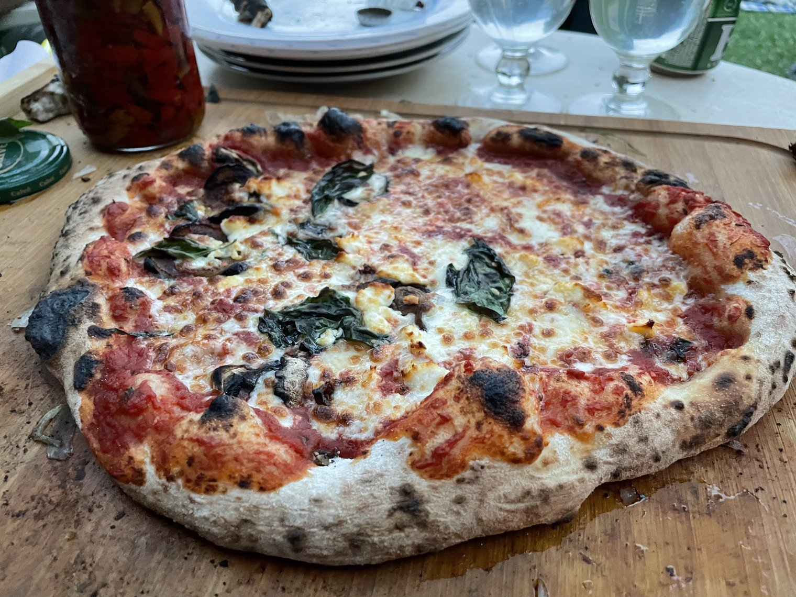

Pizza napoletana by Peppino
Ingredients
- 2 kg di farina
- 7 g di lievito di birra
- 1.4 l di acqua fredda (ghiacciata)
- 60 g di sale marino
- 4 cucchiai di olio extravergine d'oliva

Preparazione
Passo 1
Mischiare 2 kg di farina con 7 g di lievito di birra sbriciolato.
Passo 2
Aggiungere 1 l dei 1.4 l di acqua fredda (ghiacciata) e girare. Se è troppa acqua, provare con 650-680ml per kg di farina.
Passo 3
Aggiungere 60 g di sale marino e piano piano, a filo, l’acqua restante. Si possono aggiungere 4 cucchiai di olio extravergine d'oliva (opzionale).
Passo 4
Impastare per circa 20-30min. Lasciare fuori per circa 30min o 1h.
Passo 5
Fare le palline di 285g e metterle nel frigo a 6 gradi per 3 giorni. Tirarle fuori 1/2h prima.
Passo 6
Quando stendo la pallina, la metto nella farina. Infornare a 400ºC per 100 secondi.
Consigli
Farina tipo 0 (meno raffinata della 00). Farina tipo 1 (ai cereali, al germe di grano…). Ottima la farina 0 Caputo Nuvola.
In frigo può rimanere tra 3 e 4 giorni, quando sta più top; massimo 7 giorni. Almeno 48h.
Per impasto di 18 ore: 6,07g di lievito. Aspetto 1/2 ora e metto in frigo. Il giorno dopo tiro fuori 5min e faccio le palline. Dopo 4 ore inforno.